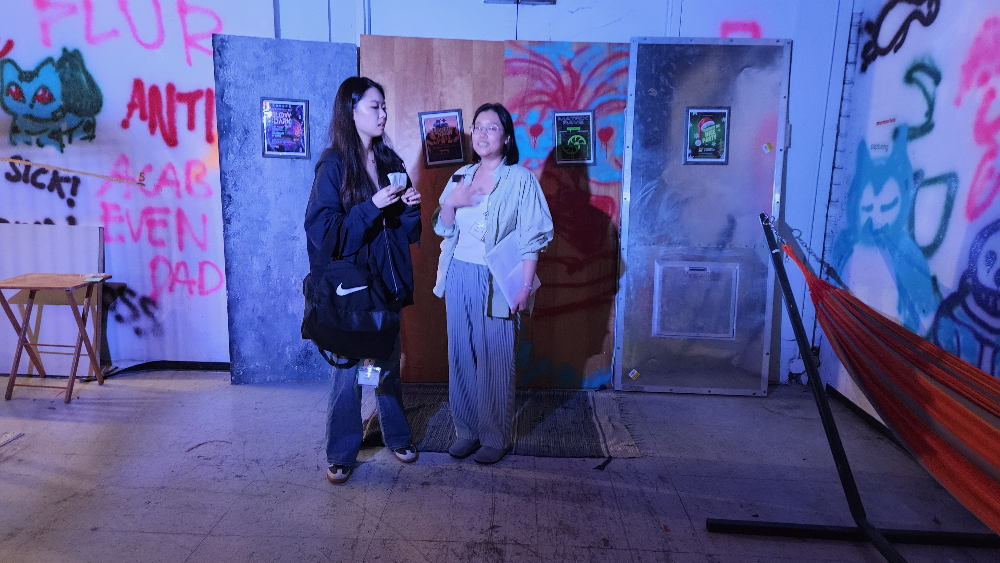
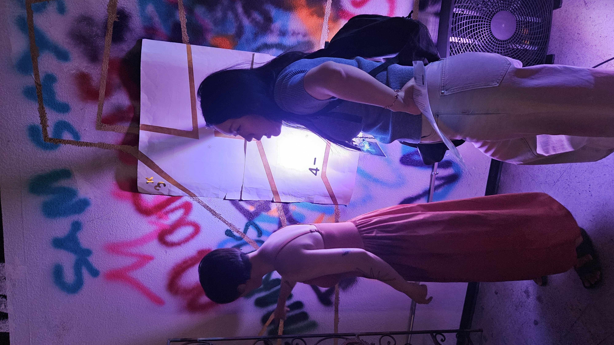
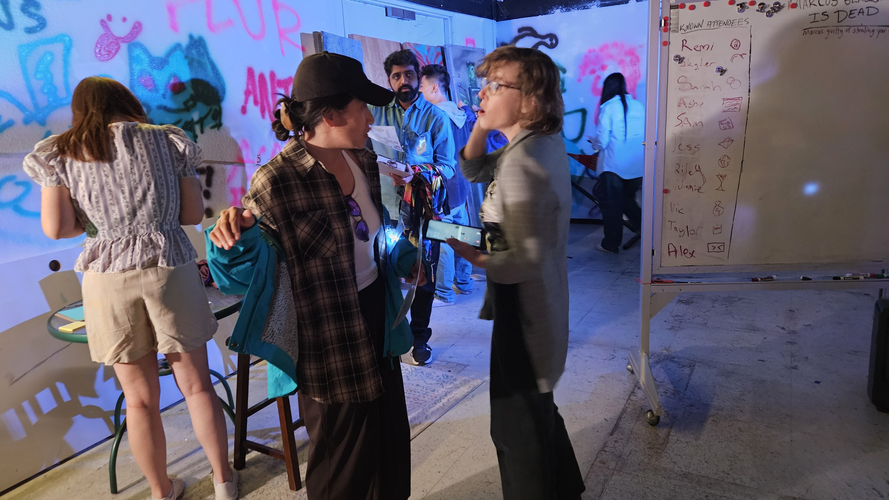
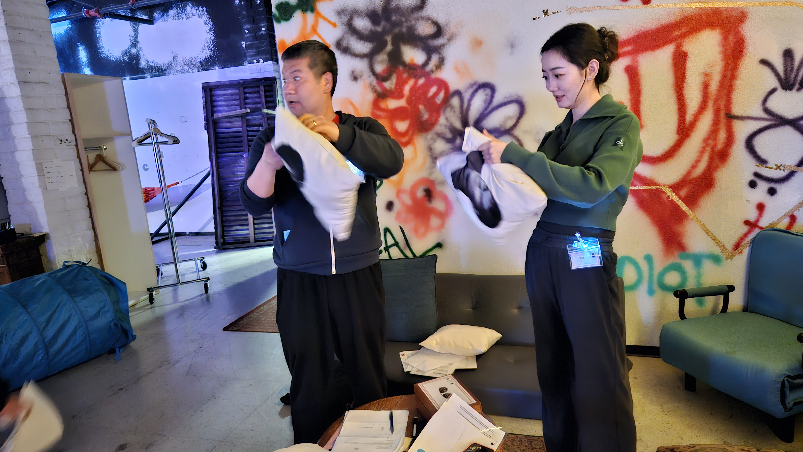
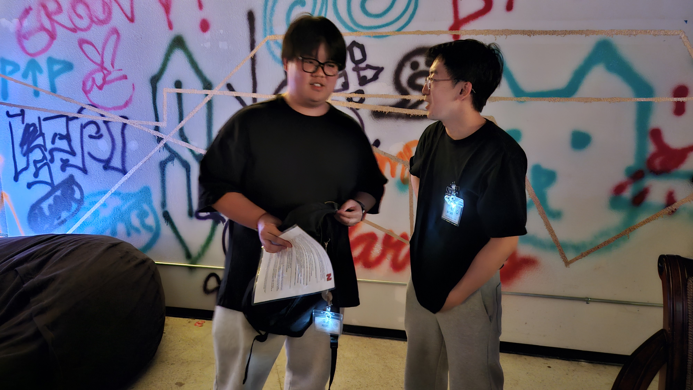
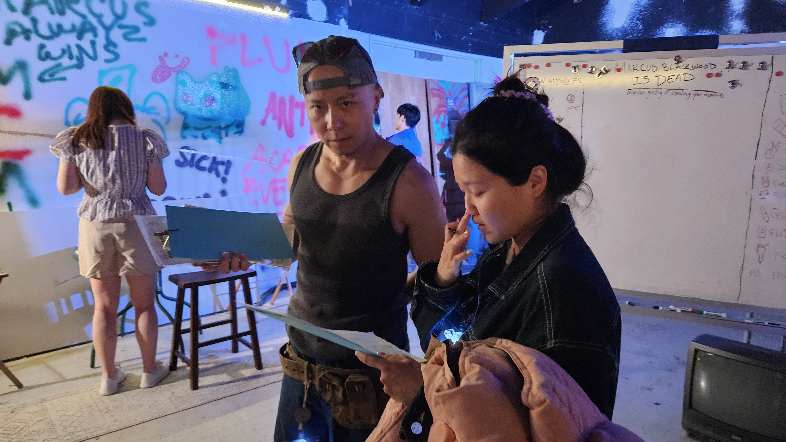

A Murder, Put to a Vote
Twenty guests spent the night deciding which of them killed Marcus Blackwood. By a single vote, they named Vic Kingsley, the most powerful person in the room and the hardest to control. A NovaNews investigation into a verdict that was never really about the evidence.

Marcus Blackwood is dead. The twenty guests from last night's party spent this morning arguing over which of them killed him, and every one of them had a reason. By the time the arguing burned down to a vote, it was nine to eight, and the name on top was Vic Kingsley: the wealthiest person in the room, the investor everyone needed and nobody could steer, the one person there who answered to no one else present.
I was in that room. I watched it narrow twenty suspects to one by a single ballot. What I did not watch was an investigation. The person who stood to gain the most from Marcus being gone walked out of that room without a target on his back. I will get to him. First, understand what the night actually had too much of: motive.
THE STORY
Start with the theft, because almost everyone in that room had a piece of it. Marcus Blackwood built NeurAI, a company he told investors would transform memory capture, on code he did not write. Zia Bishara wrote it. She built a storage algorithm called the Oracle Ledger back in Ezra Sullivan's incubator program, let other students prototype with it, and watched Marcus quietly fold it into NeurAI's so-called proprietary system. Remi Whitman ran the forensic comparison and put it on a laptop screen in front of the two people who mattered most. The builders had become the investigators.
Read that again. Same variable names. Same comments. He did not steal carefully. He stole lazily, and he left in a bug Zia had already fixed in her own version. That is the company a roomful of investors lined up to fund. And Zia was not alone. Cass Zhang pitched Marcus a tool she calls the Synesthesia Engine, demoed it, watched him grin and promise her fifty thousand dollars, then never sign and never pay. Skyler Iyer caught Marcus fishing for CyberLife's neural protocols he had no business knowing. A police report from October 2024 tells the oldest piece of it: Ezra Sullivan's office at the Electronic Frontier Foundation was burglarized, and the only things taken were the files from a 2020 incubator program. The program that trained Cass, Quinn, Zia, and Skyler. The pattern was years old before anyone got to the party.

Then there is what Marcus did with all that stolen science. The Synesthesia Engine, the tool Cass never got paid for, was running through Kai Andersen's party installation the whole night. Kai did not know. Marcus handed him a code segment, told him to run it exactly as written, and Kai only connected the dots at 12:38 in the morning, when Cass needed ten seconds to recognize her own work. The question Kai wrote into his own memory is the one nobody could answer yet: why was Marcus so anxious to run it on unsuspecting guests?
That is Marcus's own recovered memory. I surfaced it myself. It is a confession. He drugged his own guests, ran a memory extraction on them, and stood there watching them wander the rooms in a chemical fog. The compound came from Quinn Sterling, whose research into a substance called Psychotrophin-3A Marcus found out about and used to blackmail Quinn into producing more. And Nat Francisco, sitting with Sam Thorne and the rest of the old Stanford circle, had figured out the rotten center of all of it: the AI underpinning NeurAI does not work. It never worked. Marcus did not fix the fraud. He started stealing memories instead.

And then there is the human cost. Jess Kane was pregnant with Marcus's child. Sarah Blackwood, his wife, had finally thrown him out and came to the party to confront him. Marcus had sent each of them the same apology card, the same rose on the front, the same line inside: she means nothing to me, don't leave me. To his wife, the throwaway "she" was the mistress. To his mistress, it was his wife. Sam Thorne had found the paternity test and mailed it anonymously to Sarah so she would know. Everything in those rooms pointed toward two women becoming enemies. Instead, at 1:36 in the morning, in a bathroom, they found something else.
So the night did not lack for people with reasons to want Marcus gone. The code he stole. The artist he used. The researcher he blackmailed. The investors he defrauded. The women he wrecked. Motive was the cheapest thing in that house. So the question was never who had a motive. The question was: who did the room choose, and why? The answer, as usual, was money. That is where my reporting and the vote begin to part ways.
FOLLOW THE MONEY
The room needed a reason it could say out loud, and the reason was money. That Marcus was hiding his wealth is on the record. One recovered memory has Mel arriving at a late-night meeting with a sheaf of Marcus's secret bank accounts; Morgan handed Taylor the rest, the shell companies Marcus ran his income through. The room gathered all of it and decided that if Marcus died, the money would come to Vic.
But that last step is the one nobody could take. Mel had the secret accounts because he was building Sarah's divorce case. Morgan had the shell companies and spent them on a reporter. Neither of them, and nothing else in that room, put a dollar of Marcus's money anywhere near Vic. The inheritance was an assertion floating free of every document that held up the rest of the story.

The only ledger this investigation actually produced is a different pool of money entirely, the night's black market, where memories were bought and buried.
THE PLAYERS
Here is the comparison the room would not make. Nobody who cast a vote was confused. They were choosing. So look at the choice, and the candidate the room let off the hook. Let us start with what was already in motion before Marcus ever hit the floor.
Vic was running a transition. In her own recovered memory she has already decided it: Alex in, Marcus out, before midnight. The deal was done. And someone saw it happen. Jamie 'Volt' Woods stepped outside for a smoke and overheard the man who had just punched Marcus in a panicked huddle with a VC.

So look at Alex Reeves, who had the oldest grievance in the room. His cease-and-desist letter, recovered from the night, lays it out: he and Marcus co-founded a company called BizAI, where Alex did all the engineering while Marcus worked the investors, and when Marcus sold it for three hundred million dollars, Alex was handed a "technical consultation fee" instead of his share of the equity. Now Alex says NeurAI runs on that same stolen code, and his lawyers had given the board until the end of February to make him whole. He threw the punch that night. And by 9:55 he was being installed in Marcus's chair. Motive, opportunity, and the prize, all stacked on one man. He got eight votes. He made one more friend than Vic lost. Knowing what I know about these people, it's hard not to believe the vote broke toward Vic instead of Alex because of the people in that room feared Vic, and many, including Vic, had just began investing in Alex's success.
That is the asymmetry, and it is the whole story. The room blamed the most powerful person present and protected the person with the most to gain. Nine to eight is not an evidentiary verdict. It is the price of being liked. I am not telling you Alex killed Marcus. I have no evidence that he did, and I will not pretend otherwise. I am telling you that the man who maybe had the most to gain from Marcus' disappearance was somehow protected, even if only by one vote.
Everyone else is in the record too. Zia's proof of the theft sits on it, and Cass's; Quinn's memory of the blackmail used against them; Nat's account of the fraud at the company's core. Jess and Sarah refused to become each other's enemies. Ashe Motoko kept reporting even after Taylor Chase had helped bury his earlier story, and landed a rare on-record interview with Ezra Sullivan. Skyler guarded what Marcus tried to steal. Flip got dragged into Marcus's orbit by a debt. And then the two who haunt the edges: Morgan, the ghost at the center of the financial theory the room built and then refused to point at, and Taylor, a journalist who once buried the truth about Marcus for access.
WHAT'S MISSING

Start with Morgan Reed, because the room did not. Morgan is the one who handed Taylor the entire case against Marcus: the shell companies, the insider trading, the experiments on unwitting guests, the perjury. Sit with the shell companies. You do not recite a man's hidden corporate structure to a reporter, company by company, unless you have been close to it. The room spent what Morgan knew on a motive against Vic and never once turned the question around: how does a lobbyist come to know exactly where Marcus buried his income? They had the one person who could name where the money was hidden standing in the room all night, and they pointed everywhere else.
There is another silence, and it has a name. Riley Torres came to that party for one reason: to stand by Sarah. A card she kept for her best friend reads like a vow, reminders of Sarah's worth for the day she was finally ready to leave Marcus for good. Whatever Riley saw that night, her recovered memory was buried, and I cannot read it. I do not know what was in it. I only know it went dark, and that the room reached its verdict without ever asking what it held. The questions that might have unmade the vote never got asked.
CLOSING
Marcus Blackwood built a company on stolen code, blackmailed a researcher into making a dangerous drug, ran a non-consensual memory extraction on his own guests, and turned their stolen experiences into something you could trade on a ledger. The room spent the night fighting over those extracted memories and ended by naming the most powerful woman in it, by a single vote. Meanwhile the most protected person in the room, the one with the most to gain, collects the prize. At the time of writing, an anonymous source on the NeurAI board confirmed it: Alex will be offered the interim CEO role once this blows over. That is how power actually moved. Not in the vote, but in who was safe to protect.
Marcus made memory a commodity. The room made the verdict a way to be rid of the person it feared most, and called it justice. Twenty people who each had a reason to want Marcus gone chose the one among them they could least control, and handed her to the police by a single vote. Somewhere in that ledger, an account called L is still holding over a million dollars no one will claim publicly, but that was never the question the room was asking. The question was who to blame, and they answered it. The case is still open. Who knows if the accusations will stick to someone as resourceful and as connected as Vic. But that probably doesn't even matter. The verdict was never really about the case.